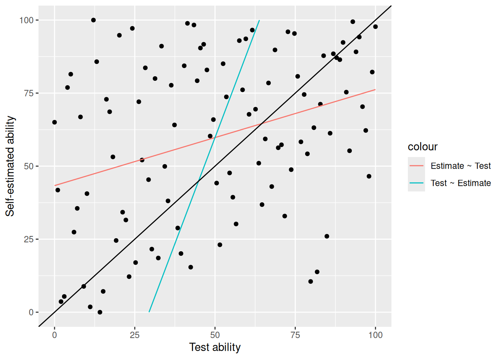
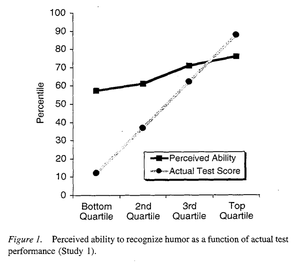
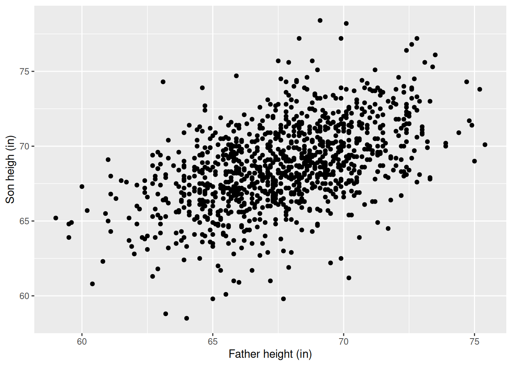
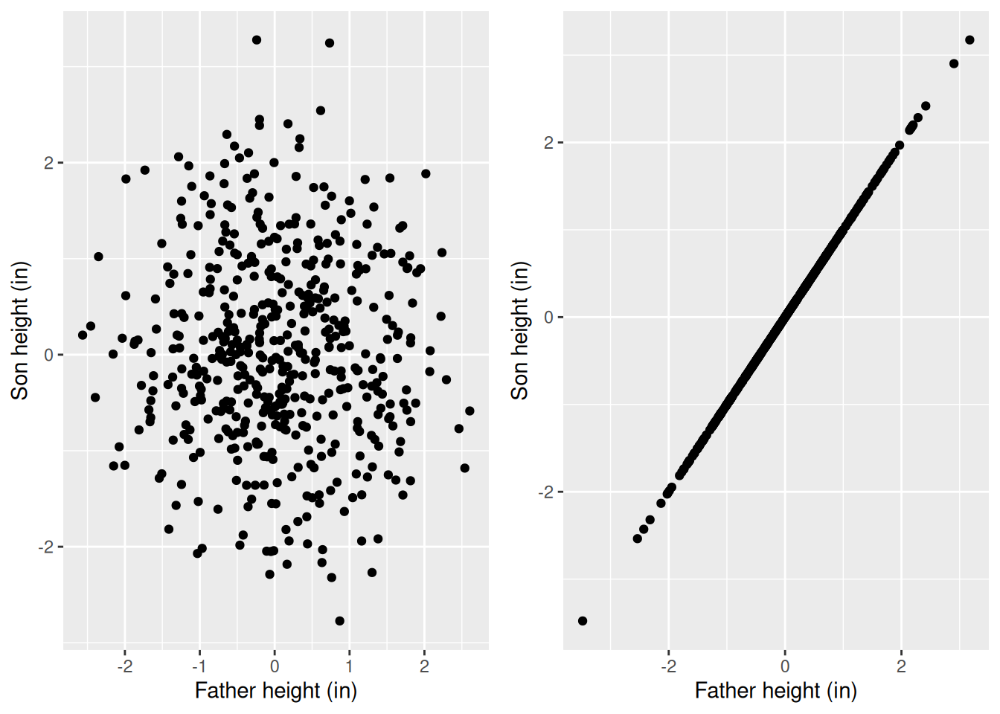

Regression to the mean
Goals
- Gain intuition for the phenomenon of regression to the mean
- Everyday intuition
- The asymmetry of OLS
- The effect on regression of noise in the regressors
Regression to the mean
Read Statistics (Freedman, Pisani and Purves) chapter 10 section 4.
The Dunning-Kruger effect
The Dunning-Kruger effect is a famous phenomenon in psychology (and popular culture). The idea is that skilled people underestimate their ability, and unskilled people overestimate their ability. Here is a figure from the original paper (Kruger and Dunning (1999)):

How would you interpret this chart? The authors clearly expect you to notice that, for lower quartiles of actual performance (a class of people the authors call “incompetent”), their self-evaluations are higher than their actual performance, and that in the top “competent” quartile, their self-evaluations are lower than their actual performance.
Unfortunately, authors’ original data is not available. But we could imagine that it looks something like this:
First of all, these dots no longer tell a compelling story. But more concerningly, I have shown two regression lines:
- A red line regressing their estimated performance on the test performance (this matches the original paper’s figure)
- A blue line regressing their test performance on their estimated performance.
Note that the second line, if you take it seriously, actually contradicts the original conclusion — it appears to state the higher performing individuals overestimate rather than underestimate their performance.
The fact that the lines have different slopes relative to the 45 degree line is known as “regression to the mean.” There are a lot of ways to understand it, but one way, which I will motivate here, is the idea of errors in regressors.
Regression to the mean
The way I generated this data — which is a plausible stochastic representation of how the actual data was calculated — was that I generated \[ \begin{aligned} \mu := \text{True ability} \sim{}& \mathcal{N}\left(0, 1\right)\\ x_e := \text{Estimated ability} \sim{}& \mathcal{N}\left(\text{True ability}, 1.4^2\right)\\ x_t := \text{Test ability} \sim{}& \mathcal{N}\left(\text{True ability}, 1.4^2\right). \end{aligned} \] I then converted these normals to quantiles, and biased the estimated abilities’ quantiles upwards, since people are known to uniformly over-estimate the quantile of their ability.
Ignoring the conversion to quantiles, which just adds some non-essential technical details, we can write \[ \begin{aligned} x_{en} = \mu_n + \varepsilon_{en} \quad\textrm{and}\quad x_{tn} = \mu_n + \varepsilon_{tn},\\ \textrm{ where }\mathrm{Var}\left(\varepsilon_{en}\right) = \sigma_e^2 \textrm{ and }\mathrm{Var}\left(\varepsilon_{tn}\right) = \sigma_t^2, \textrm{ and } \varepsilon_{en},\varepsilon_{tn},\mu_n \textrm{ are independent.} \end{aligned} \] That is, both the estimated and test performance are random measurements of the same underlying variable, the unobserved true ability, \(\mu_n\), which is different from person to person. Importantly, note that \(\mathbb{E}\left[x_{en} \vert \mu_n\right] = \mathbb{E}\left[x_{tn}\vert \mu_n\right] = \mu_n\), so there is no systematic misestimation of ones one ability. However, both the test and self-evaluation are observed with some error.
Let’s apply the FWL theorem and law of large numbers to see what we can learn about the slopes of the two regressions. First, by the law of large numbers, \[ \bar{x}_{e} := \frac{1}{N} \sum_{n=1}^Nx_{en} \approx \frac{1}{N} \sum_{n=1}^N\mu_n =: \overline{\mu} \quad\textrm{and}\quad \bar{x}_{t} := \frac{1}{N} \sum_{n=1}^Nx_{tn} \approx \frac{1}{N} \sum_{n=1}^N\mu_n = \overline{\mu}. \] Then, by the FWL theorem, the slope of the regression of estimated ability on test ability is \[ \begin{aligned} \hat{\beta}_{e \sim t} :={}& \frac{\frac{1}{N} \sum_{n=1}^N(x_{en} - \bar{x}_e) (x_{tn} - \bar{x}_t)}{\frac{1}{N} \sum_{n=1}^N(x_{tn} - \bar{x}_t)^2} \\={}& \frac{\frac{1}{N} \sum_{n=1}^N(\mu_n + \varepsilon_{en} - \bar{x}_e) \frac{1}{N} \sum_{n=1}^N(\mu_n + \varepsilon_{et}- \bar{x}_t)}{\frac{1}{N} \sum_{n=1}^N(\mu_{n} + \varepsilon_{tn} - \bar{x}_t)^2} \\\approx{}& \frac{\frac{1}{N} \sum_{n=1}^N(\mu_n - \overline{\mu}+ \varepsilon_{en} ) \frac{1}{N} \sum_{n=1}^N(\mu_n - \overline{\mu}+ \varepsilon_{et})}{\frac{1}{N} \sum_{n=1}^N(\mu_{n} - \overline{\mu}+ \varepsilon_{tn} )^2} & \textrm{(plugging in LLN for }\bar{x}_{e},\bar{x}_{t}\textrm{)} \\\approx{}& \frac{\frac{1}{N} \sum_{n=1}^N(\mu_n - \overline{\mu})^2}{\frac{1}{N} \sum_{n=1}^N(\mu_{n} - \overline{\mu})^2 + \frac{1}{N} \sum_{n=1}^N\varepsilon_{tn}^2} & \textrm{(Exercise to verify this using the LLN!)} \\\approx{}& \frac{\sigma^2}{\sigma^2 + \sigma_t^2} \end{aligned} \]
Because of the noise in the regressors, \(\sigma_e > 0\), we necessarily get that \(\left|\hat{\beta}_{e \sim t}\right| < 1\).
Similarly, we see that \(\left|\hat{\beta}_{t \sim e}\right| < 1\) as well.
In contrast, the same computation shows that if we regressed \(x_{en} \sim \beta_{e \sim \mu} \mu_n\), we would estimate \(\hat{\beta}_{e \sim \mu} \approx 1\). The presence of noise in the regressors biases our regression estimate downwards.
Did Dunning and Kruger know this?
This shortcoming of the original Dunning and Kruger paper has been widely noticed. The authors of the original paper even raise this concern themselves several times in the paper. For example, they write
“Of course, this overestimation could be taken as a mathematical verity. If one has a low score, one has a better chance of overestimating one’s performance than underestimating it. Thus, the real question in these studies is how much those who scored poorly would be miscalibrated with respect to their performance.” (Emphasis mine.)
Suffice to say that it’s not clear to me that looking at miscalibration in this way resolves the question of regression to the mean, and I don’t think the original paper adequately addresses this concern, despite attempting to address it correctly.
I am not an expert and won’t attempt to summarize subsequent literature, but follow-on work (e.g. Gignac and Zajenkowski (2020)) at least adds some nuance to the original conclusion.
Fathers and sons

Here another classic example of real-wold regression to the mean. In fact, this example is what led linear regression to be called “regression.” We expect that a son is roughly the same height as his father. But if we run the regression
reg <- lm(Son ~ 1 + Father, pearson_df)
print(summary(reg))
Call:
lm(formula = Son ~ 1 + Father, data = pearson_df)
Residuals:
Min 1Q Median 3Q Max
-8.8910 -1.5361 -0.0092 1.6359 8.9894
Coefficients:
Estimate Std. Error t value Pr(>|t|)
(Intercept) 33.89280 1.83289 18.49 <2e-16 ***
Father 0.51401 0.02706 19.00 <2e-16 ***
---
Signif. codes: 0 '***' 0.001 '**' 0.01 '*' 0.05 '.' 0.1 ' ' 1
Residual standard error: 2.438 on 1076 degrees of freedom
Multiple R-squared: 0.2512, Adjusted R-squared: 0.2505
F-statistic: 360.9 on 1 and 1076 DF, p-value: < 2.2e-16
Are sons shrinking over time? In fact, note that we can run the regression the other way and get a similar result:
reg_reversed <- lm(Father ~ 1 + Son, pearson_df)
print(summary(reg_reversed))
Call:
lm(formula = Father ~ 1 + Son, data = pearson_df)
Residuals:
Min 1Q Median 3Q Max
-7.3309 -1.6468 0.0634 1.6200 7.1589
Coefficients:
Estimate Std. Error t value Pr(>|t|)
(Intercept) 34.12494 1.76815 19.3 <2e-16 ***
Son 0.48864 0.02572 19.0 <2e-16 ***
---
Signif. codes: 0 '***' 0.001 '**' 0.01 '*' 0.05 '.' 0.1 ' ' 1
Residual standard error: 2.377 on 1076 degrees of freedom
Multiple R-squared: 0.2512, Adjusted R-squared: 0.2505
F-statistic: 360.9 on 1 and 1076 DF, p-value: < 2.2e-16
Of course it cannot be the case that fathers are smaller than sons and sons are smaller than fathers.
What is going on? This is an example of two common phenoena:
- Regression to the mean
- Errors in regressors
The asymmetry of regression
Consider this thought experiment. Imagine a dataset where fathers’ and sons’ heights are totally unrelated. It might look like the left plot below. It seems clear that, if we regressed \(\textrm{Son height} ~ 1 + \textrm{Father height}\) on this totally unrelated data, we should get a slope of \(0\). Conversely, if son height is exactly equal to father height, then the data should look like the right plot, and we should get a slope of \(1\).
grid.arrange(
ggplot(data.frame(Father=rnorm(500), Son=rnorm(500))) +
geom_point(aes(x=Father, y=Son)) +
xlab("Father height (in)") + ylab("Son height (in)")
,
ggplot(data.frame(Father=rnorm(500))) +
geom_point(aes(x=Father, y=Father)) +
xlab("Father height (in)") + ylab("Son height (in)"),
ncol=2
)
Our real data looks somewhere in between, so we expect a slope of something between \(0\) and \(1\).
However, you can also make the reasoning go the other way!
Although we regressed sons on fathers, we could have equally well regressed fathers on sons, and got exactly the same result. In other words, we have
\[ \mathbb{E}\left[h_{n2} \vert h_{n1}\right] = \beta h_{n1} \quad\textrm{and}\quad \mathbb{E}\left[h_{n1} \vert h_{n2}\right] = \beta h_{n2}, \]
for roughly the same \(\beta < 1\). Note that without the expectations this would be impossible! In fact, by ordinary algebra, if
\[ h_{n2} = \beta h_{n1} \quad\Rightarrow\quad h_{n1} = \beta^{-1} h_{n2}. \]
If \(0 < \beta < 1\), then we must have \(\beta^{-1} > 1\), in contradiction to our regression result. Mixing up the expectation estimated by regression and a deterministic algebraic result is the source of what may seem paradoxical about regression to the mean.
Regression to the mean due to stationarity
Imagine a sequence of generations of fathers and sons numbered \(1,2,3\ldots\). Let the height of the individual in generation \(i\) be \(h_i\). Specifically, \(h_1, h_2\) form a father–son pair of heights.
Suppose that the marginal variance of heights is constant. Without loss of generality, we can take \(\mathrm{Var}\left(h_i\right) = 1\) for all \(i\). For simplicity, we can also assume that \(\mathbb{E}\left[h_i\right] = 0\), so that heights are measured relative to the overall mean.
What does this mean about the conditional mean \(\mathbb{E}\left[h_{i + 1} | h_{i}\right]\)? Suppose that \(\mathbb{E}\left[h_{i + 1} \vert h_{i}\right] = \beta h_{i}\), meaning that, on average, a son’s height is \(\beta\) times the father’s height.
\[ \begin{aligned} 1 ={}& \mathrm{Var}\left(h_2\right) \\={}& \mathbb{E}\left[h_2^2\right] \\={}& \mathbb{E}\left[\mathbb{E}\left[h_2^2 | h_1\right]\right] \\={}& \mathbb{E}\left[\mathbb{E}\left[h_2^2 | h_1\right] - \mathbb{E}\left[h_2 \vert h_1\right]^2 + \mathbb{E}\left[h_2 \vert h_1\right]^2\right] \\={}& \mathbb{E}\left[\mathrm{Var}\left(h_2 | h_1\right)\right] + \mathbb{E}\left[(\beta h_1)^2\right] \\={}& \mathbb{E}\left[\mathrm{Var}\left(h_2 | h_1\right)\right] + \beta^2 \mathbb{E}\left[h_1^2\right] \\={}& \mathbb{E}\left[\mathrm{Var}\left(h_2 | h_1\right)\right] + \beta^2 \Rightarrow\\ \beta ={}& \sqrt{1 - \mathbb{E}\left[\mathrm{Var}\left(h_2 | h_1\right)\right]}. \end{aligned} \]
This means that as long as there is some variability in the son’s height given the father (so \(\mathbb{E}\left[\mathrm{Var}\left(h_2 | h_1\right)\right] > 0\)), then \(\beta\) must be less than one, otherwise the variance of heights would be growing over time.
Regression to the mean as errors in variables
This motivates a different perspective on the same problem: errors in variables. Rather than modeling \(\mathbb{E}\left[h_{i+ 1} | h_i\right]\) directly, a more reasonable model is that both \(h_i\) and \(h_{i + 1}\) are noisy measurements of the same quantity.
Suppose that fathers and sons come from a “lineage” \(n\), with heights \(h_{n1}\) and \(h_{n2}\) respectively. Let’s say that the father and son share a genetic propensity for tallness, \(\mu_n\), and that
\[ h_{n1} = \mu_n + \varepsilon_{n1} \quad\textrm{and}\quad h_{n2} = \mu_n + \varepsilon_{n2}, \]
where \(\varepsilon_{n1}\) and \(\varepsilon_{n2}\) are IID mean zero “errors,” or deviations from the shared “propensity.” If \(\mu_n\) is IID across \(m\) and independent of the errors, then
\[ \mathrm{Var}\left(h_{ni}\right) = \mathrm{Var}\left(\mu_n\right) + \mathrm{Var}\left(\varepsilon_{n1}\right) = \sigma_\mu^2 + \sigma_\varepsilon^2 = 1 \]
so the “total” marginal variance of heights is decomposed into a component due to the variability in genetics (\(\sigma_\mu^2\))and the ideosyncratic variability of individuals (\(\sigma_\varepsilon^2\)). Note that
\[ \mathbb{E}\left[h_{n1} | m\right] = \mathbb{E}\left[h_{n2} | \textrm{lineage }n\right] = \mu_n, \]
so sons and fathers are the same height on average. However, if we regress \(h_{n2} \sim \beta h_{n1}\), we get
\[ \begin{aligned} \hat{\beta} ={}& \frac{\frac{1}{N} \sum_{n=1}^Nh_{n2} h_{n1}}{ \frac{1}{N} \sum_{n=1}^Nh_{n1}^2} \\={}& \frac{\frac{1}{N} \sum_{n=1}^N(\mu_n + \varepsilon_{n2}) (\mu_n + \varepsilon_{n2}) } { \frac{1}{N} \sum_{n=1}^N(\mu_n + \varepsilon_{n1})^2} \\={}& \frac{\frac{1}{N} \sum_{n=1}^N\mu_n^2 + \frac{1}{N} \sum_{n=1}^N\varepsilon_{n2} \mu_n + \frac{1}{N} \sum_{n=1}^N\varepsilon_{n1} \mu_n + \frac{1}{N} \sum_{n=1}^N\varepsilon_{n1} \varepsilon_{n2} } {\frac{1}{N} \sum_{n=1}^N\mu_n^2 + \frac{1}{N} \sum_{n=1}^N\varepsilon_{n1} \mu_n + \frac{1}{N} \sum_{n=1}^N\varepsilon_{n1} \mu_n + \frac{1}{N} \sum_{n=1}^N\varepsilon_{n1}^2 } \\\approx{}& \frac{\sigma_\mu^2}{\sigma_\mu^2 + \sigma_\varepsilon^2} < 1. \end{aligned} \]
Again, we see that \(\hat{\beta}\) must be less than one as long as there is some ideosyncratic variation, \(\sigma_\varepsilon^2 > 0\).
Error in variables more generally
In fact, regression to the mean is a special case of a more general phenomenon of “errors in regressors.” In general, the problem looks like this.
Suppose you believe that \(y_n = \boldsymbol{\beta}^\intercal\boldsymbol{x}_n + \varepsilon_n\), but you don’t observe \(\boldsymbol{x}_n\) directly. Instead, you observe
\[ \boldsymbol{z}_n = \boldsymbol{x}_n + \boldsymbol{\eta}_n, \]
where \(\boldsymbol{\eta}\) is a mean zero random error independent of everything else (in particular, of \(\varepsilon_n\)).
What happens if you regress \(y_n \sim \boldsymbol{\gamma}^\intercal\boldsymbol{z}_n\) instead of \(\boldsymbol{x}_n\)? The answer is you bias the estimate of \(\beta\) by an amount determined by the covariance of \(\boldsymbol{\eta}_n\). Specifically, if \(\boldsymbol{\eta}_n\) has covariance \(\mathrm{Cov}\left(\boldsymbol{\eta}_n\right) = \boldsymbol{V}\), then
\[ \begin{aligned} \boldsymbol{\gamma}={}& \left(\boldsymbol{Z}^\intercal\boldsymbol{Z}\right)^{-1} \boldsymbol{Z}^\intercal\boldsymbol{Y} \\={}& \left((\boldsymbol{X}+ \boldsymbol{\eta})^\intercal(\boldsymbol{X}+ \boldsymbol{\eta}) \right)^{-1} (\boldsymbol{X}+ \boldsymbol{\eta})^\intercal(\boldsymbol{X}\boldsymbol{\beta}+ \boldsymbol{\varepsilon}) \\={}& \left(\frac{1}{N}\left(\boldsymbol{X}^\intercal\boldsymbol{X}+ \boldsymbol{X}^\intercal\boldsymbol{\eta}+ \boldsymbol{\eta}^\intercal\boldsymbol{X}+ \boldsymbol{\eta}^\intercal\boldsymbol{\eta}\right) \right)^{-1} \frac{1}{N} \left(\boldsymbol{X}^\intercal\boldsymbol{X}\boldsymbol{\beta}+ \boldsymbol{\eta}^\intercal\boldsymbol{X}\boldsymbol{\beta}+ \boldsymbol{X}^\intercal\boldsymbol{\varepsilon}+ \boldsymbol{\eta}^\intercal\boldsymbol{\varepsilon}\right). \\\approx{}& \left(\frac{1}{N} \boldsymbol{X}^\intercal\boldsymbol{X}+ \boldsymbol{V}\right)^{-1} \frac{1}{N} \boldsymbol{X}^\intercal\boldsymbol{X}\boldsymbol{\beta}. \end{aligned} \]
References
Gignac, Gilles E, and Marcin Zajenkowski. 2020. “The Dunning-Kruger Effect Is (Mostly) a Statistical Artefact: Valid Approaches to Testing the Hypothesis with Individual Differences Data.” Intelligence 80: 101449.
Kruger, Justin, and David Dunning. 1999. “Unskilled and Unaware of It: How Difficulties in Recognizing One’s Own Incompetence Lead to Inflated Self-Assessments.” Journal of Personality and Social Psychology 77 (6): 1121.